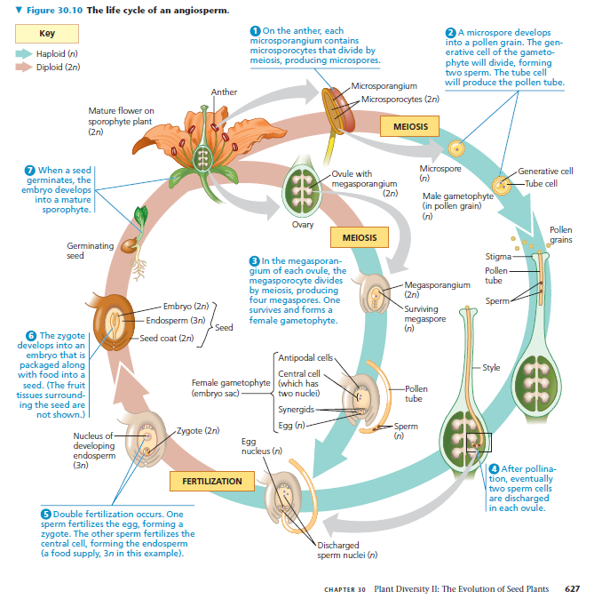
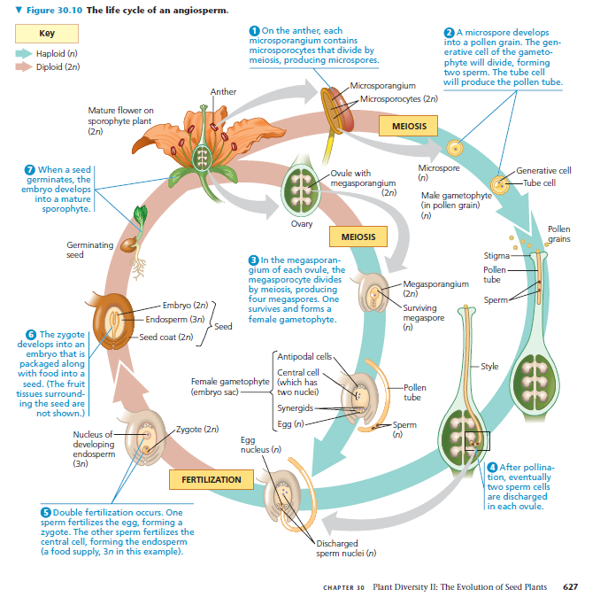
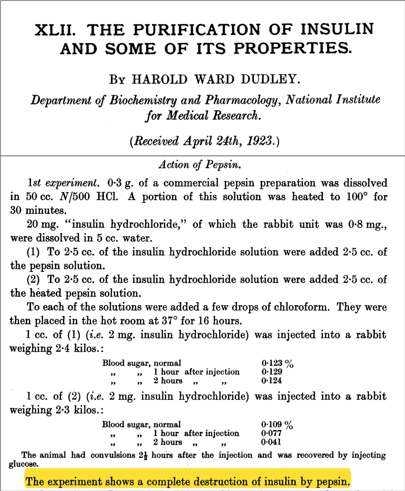
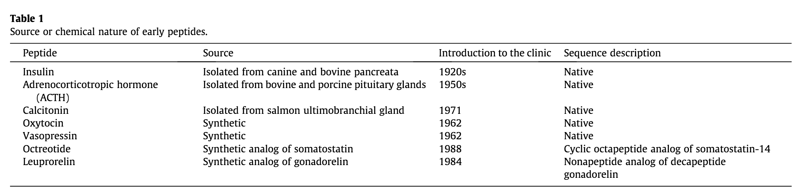
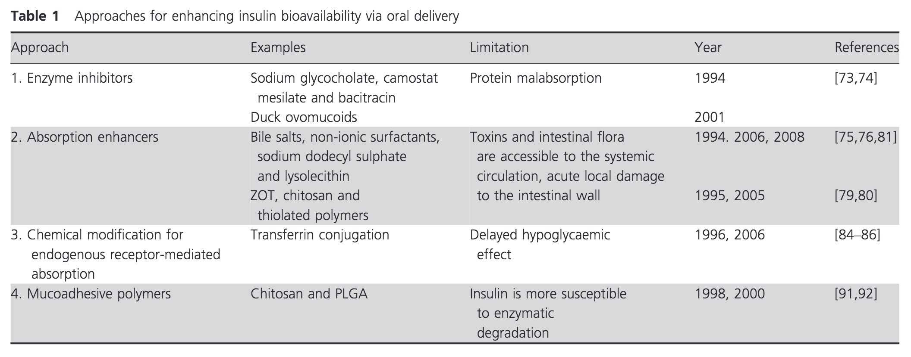

1 Įžanga
Knyga yra nuolatos atnaujinama. Tai nėra galutinis produktas. Laukite naujienų!
1.1 Turinys
- Augalai
- Augalų struktūra ir augimas
- Medžiagų pernaša augaluose
- Augalų dauginimasis
- Augalų hormonai
- Ląstelės biologija
- Mikroskopija
- Ląstelės struktūra
- Ląstelės funkcijos
- Funkcinis ir struktūrinis ląstelių santykis
- Ląstelės membrana
- Ląstelės metabolizmas
- Biochemija
- Fermentų kenetika
- Makromolekulės
- Gyvūnai
- Bakterijos
- Grybai
- Archėjos
- Pirmuonys
2 Fermentai
Fermentai tokie svarbūs ląstelės biologijoje, jog nebūtų visiškai netikslu apibūdinti ląstelę kaip fermentų telkinį apsuptą plazminės membranos. Fermentai atlieka svarbią funkciją - jie sumažina reakcijų aktyvacijos energiją, jog reakcijos, kurios įprastai vyktų pernelyg lėtai išlaikyti gyvybę, galėtų vykti sparčiai.
2.1 Fermentų struktūra
Didžioji dalis fermentų yra baltymai (maža dalis yra ribozimai). Fermentai yra globulės formos ir visi turi bendrą dalį - aktyvųjį centrą. Aktyvusis centras yra fermento vieta, kurioje fermentas sąveikauja su molekule, kurios reakciją fermentas katalizuos. Įprastai tokia molekulė yra vadinama substratu. Substratas sąveikauja aktyviajame centre su fermentoje amino rūgščių šoninėmis grupėmis. Įprastai tokios sąveikos tikslas - sumažinti molekulės stabilumą. Mažiau stabili molekulė yra labiau linkusi sąveikauti su kitomis molekulėmis. Kaip radikalai yra itin reaktyvūs, panašiai suardytas kovalentinis ryšys skatins substratą sudaryti naujus ryšius.
Svarbu pabrėžti, jog fermentai skatina reakcijos vyksmą į abi puses - fermentas su substratu sudaro tarpinį produktą, kuris turi panašią tikimybę arba virsti atgal į fermentą ir substratą, arba virsti į fermentą ir produktą. Bet jeigu reakcijos gali vykti į abi puses, koks tikslas jas skatinti fermentais? Kadangi mūsų ląstelė produktus naudoja kitoms reakcijoms, dėl mažėjančios suvartojamo produkto koncentracijos, reakciją taps linkusi vykti į “dešinę” - arba produkto pusę. Paprasčiausias pavyzdys yra H2CO3 suskaldymas į H2O ir CO2. Kadangi CO2 yra dujos, kurios nuolat šalinamos iš mūsų organizmo, mūsų organizme bus mažesnė koncentracija CO2 ir didesnė koncentracija H2CO3. Dėl to reakcija bus palankesnė į skilimo pusę. Lygiai taip pat reakcija vyktų priešingai, jeigu substrato būtų mažiau.
2.2 Fermentų funkcijos
Kadangi fermentai gali skatinti reakcijų vyksmą, kokias reakcijas fermentai įprastai skatina mūsų organizme?
2.3 Fermentų inhibicija
3 Genetika
3.1 Ląstelės ciklas
3.2 Mitozė
3.3 Mejozė
3.4 Genai
3.5 Genų sąveikos
3.5.1 Epistazė
3.5.2 Pleotropija
4 Kraujotaka
4.1 Kas yra širdies stimuliatorius?
4.2 Kraujas
Skystis atvirose kraujotakos sistemose yra toks pats kaip audinių skystis, nes jie tarpusavyje susisiekia. Uždaros sistemos turi pranašumą, jog skystis, kuris įprastai netiktų audinių skysčių, gali būti pritaikytas kitoms funkijoms. Voila - stuburiniuose išsivysto kraujas! Kraujas yra nuostabi medŽiaga, kuri ne tik užtikrina dujų apykaitą, bet taip pat apsaugą nuo infekcijų. Dar geriau, jis pats save apsaugo nuo ištekėjimo iš kraujagyslių sukrešėdamas.
Jeigu paimtumėte mėgintuvėlį su krauju, po kurio laiko pastebėtumėte dvi dalis:
- Plazmą (55%), kurią sudaro:
- Vanduo, nes kažkur turi ištirpti visa kita
- Elektrolitai (natris, kalis, kalcis, magnis, chlorido ir bikarbonato jonai)
- Baltymai (albuminas, fibrinogenas, antikūnai)
- Ir kitos medžiagos (hormonai, maisto medžiagos, ištirpusios dujos)!
- Kraujo kūneliai (45%):
- Leukocitai (baltieji kraujo kūneliai), kurie yra dalis organizmo imuninės sistemos.
- Trombocitai - kraujo krešėjimas
- Eritrocitai (raudonieji kraujo kūnėliai), kurie perneša deguonį ir dalį CO2
Tikslumo dėlei, plazmoje ištirpę natris, kalis, kalcis, magnis ir chlorido jonai yra svarbūs palaikyti tinkamas audinių skysčių jonų koncentracijas ir osmotinį balansą, konkrečiai raumeniniame ir nerviniame audinyje. Pavyzdžiui, jeigu natrio koncentracija kraujyje pradeda mažėti, ji pradeda mažėti ir audinių skystyje, nes vanduo pradeda difunduoti į audinių skystį, jog druskų koncentracija ir kraujyje, ir audinių skystyje išliktų tokia pati. Dėl mažų nuokrypių gali atsirasti raumenų silpnumas (veiksmo potencialų pikai yra mažesni), dėl didesnių nuokrypių audiniai gali pradėti brinkti.
Jonai tokie kaip karbonato arba fosfato yra svarbūs pH koncentracijai palaikyti. Jų skirtumas nuo likusių jonų yra tas, jog jie gali prisijungti vandenilio joną ir sudaryti tarpinius joninius produktus. Karbonato jonai taip pat nuostabūs, jog jie gali skilti į vandenį ir dujas, tokiu būdu pašalindami vandenilio jonų perteklių iš organizmo.
Baltymai turi kelias funkcijas: baltymai prisideda prie onkotinio slėgio, dėl kurio vanduo kraujyje išlieka kraujagyslėse ir nedifunduoja į audinių skystį. Su baltymais organizme yra transportuojami steroidiniai hormonai ir kiti lipidai. Taip pat kraujyje yra specializuoti baltymai: antikūnai yra dalis imuninės sistemos, o fibrinogenas yra dalis krešėjimo sistemos.
Ląsteliniai elementai
5 Neuroplastiškumas
Praeitame skyriuje matėme, kaip prisiminimai gali formuotis ir kuriose smegenų dalyse tai vyksta. Ar atmintis plastiška? Akivaizdu, jog atmintis yra lanksti - senus faktus sunku prisiminti ir dažnai pasikartojančius faktus galime lengvai atgaminti. Bet ar mūsų elgsena yra lanksti? Jeigu esame įpratę kramtyti nagus, ar galime pakeisti šį įprotį?
5.1 Elgsena
O jeigu šnekame apie įpročius, kuriuos žmogus supranta, bet jais remiasi? Tarkime, žmogus bijo per susirinkimus, nes jis išmoko, jog pasisakydamas jis išprovokuos žmonių pyktį?
Tyrimais yra žinoma, jog baltymų slopikliu anizomicinu galima slopinti žiurkių emocinius prisiminimus. Žiurkėms galima išvystyti fobiją asocijuojant stimulą (triukšmą, šviesą) su elektrošoku. Bet žiurkės, kurioms skirtas anizomicinas, neformuoja fobijų. Dėl to žinome, jog prisiminimams yra svarbi baltymų sintezė.
2000 m. tyrimas taip pat rado, jog fobijas galima pašalinti, jeigu anizomicinas yra skirtas ir fobijos stimulas yra labai stiprus (pavyzdžiui, žiurkė yra stimuliuojama triukšmu ilgą laiką). Tyrimas perša išvadą, jog atmintis gali “atlipti” ir smegenims reikia sintetinti baltymus jų palaikymui.
Thus the idea of memory reconsolidation: you form a consolidated memory, but every time you activate it, you need to reconsolidate it. If the reconsolidation fails, you lose the memory, or you get a slightly different memory, or something like that. If you could disrupt emotional memories like “speaking out makes you hated” while they’re still reconsolidating, maybe you could do something about this.
Deja, baltymų sintezės slopikliai yra nuodingi žmogui. Žinant, jog atmintį galima keisti, tyrėjai ieškojo kitų, mažiau pavojingų, būdų tai padaryti.
6 Augalai
6.1 Įžanga
Augalai buvo mano nemėgstamiausia tema ruošiantis olimpiadoms, bet dabar manau visiškai priešingai. Augalai yra itin svarbūs mums - dėl bulvių maro Airijoje mirė penktadalis gyventojų, EUropoje įvyko ekonominė krizė dėl tulpių gumbų, o šafranas - žiedo piestelės - yra brangiausias prieskonis pasaulyje. Jeigu ne grūdai, ko gero nebūtume turėję feodalizmo ir nebūtume tyrinėję genetikos! Pažindamas augalus gali pažinti ne tik savo mitybą, bet ir žmogaus istoriją.
6.2 Ląstelė
Skiriasi nuo eukariotinės gyvūno ląstelės šiais bruožais:
- Chloroplastai - išsidėsto ląstelės kraštuose, vykdo fotosintezę
- Centrinė vakuolė - viena, yra ląstelės centre, palaiko ląstelės formą, reguliuoja ląstelės vidinę terpę
- Plazmodezmos - tai citoplazminis tiltelis tarp dviejų augalo ląstelių. Per jį gali judėti citoplazmos turinys, organelės bei virusai.
- Ląstelės sienelė - ekstraląstelinė (extra - išorėje) struktūra, apsaugo nuo sužeidimų, palaiko formą, riboja vandens patekimą į ląstelę
- NĖRA centriolių - augalų ląstelės nevykdo citokinezės, iš Goldžio aparato pūslelių formuojasi membrana tarp dukterinių ląstelių

6.3 Chloroplastai ir fotosintezė
Chloroplastai turi dvigubą membraną (pūslelė pūslelėje), viduje yra stroma, kurioje yra išsidėstę tilakoidai. Tilakoiduose yra fotosintezės aparatas, tilakoidai yra išsidėstę į granas. Šviesos ir tamsos reakcijos vyksta chloroplaste - šviesos reakcijos vyksta tilakoidų membranoje (protonų gradientas ATP sintezei kaupiamas tilakoidų viduje), tamsos reakcijos vyksta chloroplasto stromoje.
Fotosintezę vykdo ne tik augalai, bet ir protistai (euglena) bei prokariotai (cianobakterijos, vietoje chloroplastų turi tilakoidus citoplazmoje). Fotosintezė yra autotrofų mitybos būdas - jie pasigamina organines medžiagas iš CO2 ir kitų neorganinių medžiagų. Autotrofai yra biosferos gamintojai ir taip pat suteikia organines medžiagas likusiems organizmams - vartotojams (heterotrofams).
Fotosintezė vyksta chloroplastuose ir yra sudaryta iš dviejų stadijų:
- Šviesos fazės - šviesa panaudojama aktyvinti vandens elektronus ir jais redukuoti NADP iki NADPH ir protonų gradientu sintetinti ATP iš ADP ir fosfato grupės.
- Tamsos fazės - ATP ir NADPH yra naudojama kaip energijos šaltinis CO2 fiksacijai. Galutinis produktas - organiniai angliavandeniai, dažniausiai gliukozė ir fruktozė.


6.4 Plazmodezmos
Augalinės ląstelės tarpusavyje turi plazminės membranos vamzdelius, kurie susisiekia per ląstelės sienelę. Stambios, pro jas gali judėti organelės, vanduo, makromolekulės. Greitesnė medžiagų pernaša, signalas tarp ląstelių perduodamas toliau. Bet gali judėti ir viruso DNR/RNR (tabako virusas), grybų hifai, bakterijos.

6.5 Ląstelės sienelė
Augalo ląstelės sienelė sudaryta iš trijų pagrindinių dalių - celiuliozės, pektino ir hemiceliuliozės. Hemiceliuliozė tarpusavyje apjungia skirtingus celiuliozės pluoštus, o pektinas suteikia audiniui standumo ir apjungia ląsteles tarpusavyje.
Augalo ląstelė visada turi pirminę sienelę, bet taip pat gali turėti ir antrinę sienelę, kuri yra įprastai storesnė, turi lignino bei suberino ir suteikia audiniui tvirtumo.
Pagal sienelės išsivystymą galima išskirti tris ląstelės sienelės tipus:
- Parenchimą – minkštieji audiniai
- Kolenchimą – augančios dalys
- Sklerenchimą – nedalyvauja fotosintezėje, atraminė funkcija
6.6 Plastidės
Chloroplastas yra plastidė, tačiau plastidės gali specializuotis atlikti kitas funkcijas (dažniausiai, kaupti specifines medžiagas).
Proplastidė - nediferencijuota plastidė Chromoplastas - kaupia pigmentus Amiloplastas - kaupia angliavandenius Elajoplastas - kaupia riebalines medžiagas Proteinoplastas - kaupia baltymus
6.7 Centrinė vakuolė
- Kaupia medžiagas
- Kaupia druskų perteklių, nuodingas medžiagas, apykaitos produktai
- Lizosominė funkcija
- Elektrocheminis gradientas
- Turgoras
- Ląstelių augimas
6.8 Augalo dalių adaptacijos
6.8.1 Stiebų adaptacijos
- Rizomai – horizontalus stiebas po žeme (vilkdalgis)
- Svogūnai – stiebo sustorėjimas po žeme su maisto medžiagas kaupiančiais lapais (svogūnai, tulpės)
- Ūsai – stiebo išaugos, kurios leidžia nelytiškai daugintis (braškės)
- Stiebagumbiai – požeminis stiebas, turintis pumpurus (bulvė)
6.8.2 Šaknų adaptacijos
- Šakniavaisiai – atlieka kaupiamąją funkciją (burokėlis)
- Pneumatoforai – išdygsta į orą, kai pelkėse nėra deguonies (mangrovė)
- Atraminės šaknys – kai dirva minkšta, padeda augalui išsilaikyti (banjanas)
- Orinės šaknys – dygsta ore, įsiskerbusios įsišaknyja (monstera)
6.8.3 Lapų adaptacijos
- Ūsai (ang. tendrils) – padeda prisitvirtinti prie paviršių (vijokliniai augalai, pupa)
- Spygliai – taip, kaktuso „lapas“ yra stiebas
- Kaupia maisto medžiagas – visi sukulentai
- Dauginimosi lapai – išdygę nukrenta ir sudygsta ant žemės
- Pažiedlapiai – vainiklapių pamaina (puansentija)
6.9 Iliustracijos

 



7 Skiepai
Visi esate girdėję apie skiepus ir ko gero galite paaiškinti, kodėl jie skirti. Bet iš paskutinių kelių metų anti-vakcinuotojų bangos aišku - nebūtinai yra aišku, kas yra vakcinos. Šiame skyriuje sužinosite apie vakcinas, jų pagrindinę sudėtį ir sukeltą atsaką organizme.
7.1 Kas tai?
Vakcinos, technine prasme, yra preparatas, kuris suteikia aktyvų įgytą imunitetą jos gavėjui. Vakcinos sudėtyje yra medžiaga, kuri primena ligą sukeliantį mikroorganizmą. Medžiaga, šiuo atveju, platus terminas tyčia - tai gali būti arba silpna, arba nebeveikli užkrato versija, arba tik dalis paties užkrato. Pavyzdžiui, rotaviruso vakcinoje yra atenuotas (susilpnintas) rotavirusas, kuris vis dar gali daugintis, bet negali sukelti ligos. Vakcinose taip pat gali būti ir užmuštos bakterijos arba tik jų specifiniai antigenai (membranos lipidai arba baltymai), kurie sukelia imuninį atsaką.
Vakcinos veikia skatindamos imuninę sistemą išvystyti imunitetą. Jeigu jau skaitėte skyrių apie imuninę sistemą, jau galite įsivaizduoti, jog atsakui į vakciną reaguoja T atminties ląstelės, kuriuos skatina B limfocitus subręsti į plazmines ląsteles ir gaminti antikūnus. Kitą kartą, kai organizmas susidurs su tikruoju užkratu, kraujyje jau cirkuliuos antikūnai, kurie greitai neutralizuos infekciją.
Papildoma vakcinų sudėtis stimuliuoti imuninį atsaką.
Tiomersalio naudojimas
7.2 Vakcinų tipai
7.3 Vakcinos veikimo trukmė
7.4 Vakcinų šalutiniai poveikiai
7.5 Vakcinų ateitis
8 Įvairybės
8.1 Deguonis ir anglies dioksidas
Įrodykite arba paneikite teiginį: tai, ką įkvėpiame, pašaliname su šlapimu, o tai, ką suvalgome, iškvėpiame.
Įkvėptas deguonis organizme yra naudojamas kaip elektronų akceptorius elektronų pernašos grandinėje. Priimdamas elektronus deguonis turi per daug elektronų ir turi prisijungti porą protonų, sudarydamas vandenį. Vandens šiek tiek iškvėpiame, tačiau kiekis yra sąlyginai mažas - didžioji dalis yra pašalinama su šlapimu. Tuo tarpu maistas, kurį suvalgome, daugiausia yra pasiunčiamas į Krebso ciklą, kur vieno ciklo metu yra pašalinamos 2 molekulės anglies dioksido. Nors anglies dioksidas gali sudaryti karbonato joną (HCO3), kuris patenka į nefroną, tačiau jis yra atgal rezorbuojamas. Anglies dioksidas pasišalina iš žmogus organizmą per plaučius. Dėl to, tai, ką suvalgome, pašaliname kvėpuodami, o tai, ką įkvėpiame, pašaliname su šlapimu.
8.2 Vaistų skyrimas į veną
Viena iš priežasčių vaistai skiriami į veną yra gana akivaizdi - priešingai negu per burną, vaistas iš karto atsiduria kraujotakoje ir gali keliauti iki savo taikinio. Kita svarbi priežastis - žarnynas nebūtinai yra dėkinga vieta vaistams.
Pavyzdžiui, insulinas turi būti leidžiamas į poodį arba į kraujotaką, nes jis yra peptidas, didelis peptidas (5,8 kDa). Bet koks didelis peptidas galimai bus suvirškintas - trečiame dešimtmetyje H.W. Dudley parodė, jog pepsinas ir tripsinas pilnai suskaido insuliną.

Tai nėra išskirtinė insulino savybė. Žemiau lentelėje yra peptidiniai vaistai - nei vienas nėra skiriamas per burną:

Grįžtant prie insulino, jis kraujyje yra suskaidomas kraujo fermentų (taip, tokie yra) ir turi 10 minučių puslaikį. Tai sukelia problemų dėl vartojimo pro burną - vos insulinas šiaip ne taip patektų į kraujotaką, jis praktiškai iš karto būtų suskaidytas kraujyje. Ir kai vaistų veikimas yra priklausomas nuo pakankamos koncentracijos, tai sudaro dar vieną kliūtį vartojimui pro burną.
Antra problema - absorbcija. Žarnynas gali įsisavinti baltymus iki 700 daltonų. Bet kas didesnio patenka į kraujotaką sunkiai:

Tas pats galioja ir kitiems baltymams - dėl to mes pro burną neskiriame albumino arba inerferono1:

Galiausiai, insulinas hidrofiliškumas ne tik slopina patekima iš žarnyno į kraują, bet taip pat palengvina patekimą pro glomerulę į nefroną. Ar kas nors buvo padaryta atrasti sprendimą? Daug žmonių kasdien turi leistis insuliną, bet iki šiol bandyti sprendimai nedavė rezultatų:

9 Vitaminai
Vitaminai yra tirpūs vandenyje arba tirpūs riebaluose. Riebaluose tirpūs vitaminai yra transportuojami chilomikronuose. Chilomikronai turi vitamino A, D, E ir K, nes jie yra riebaluose tirpūs vitaminai. Būdami tirpūs tik riebaluose, jie dažniau yra kaupiami riebaliniame audinyje. Dėl to jų toksiškumo rizika yra didesnė - vandenyje tirpių riebalų perteklių mes tiesiog pašaliname su šlapimu. Visi vandenyje tirpūs vitaminai yra fermentų kofaktoriai.
9.1 Riebaluoe tirpūs vitaminai
9.1.1 Vitaminas A
Svarbus vaikams augimo metu, nes iš vitamino A sintetinamas rodopsinas akyje. Be vitamino A vystosi prasta rega tamsoje - vištakumas. Taip pat esant trūkumui vystosi plokščiųjų odos ląstelių metaplazija - vitaminas A leidžia jos išvengti. Vitamino A perteklius retas, bet pavyzdys - medžiotojas, kuris valgo meškų kepenis. Tikrai nereikia žinoti, kodėl simptomai atsiranda, bet vitaminas A taip pat yra kaupiamas kepenyse ir dėl vitamino A pertekliaus (valgant meškų kepenis) gali atsirasti kepenų nepakankamumas.
9.1.2 Vitaminas K
Didelę dalį pagamina žarnyno bakterijos, bet galima gauti ir su maistu. Naujagimiai itin jautrus vitamino K trūkumui, nes vos gimę turi 3 dienų atsargas, negauna papildomo vitamino K su pienu, o bakterijos dar nėra kolonizavusios žarnyno ir negali gaminti vitamino K. Dėl to kūdikiai turi didesnę riziką susirgti hemoragine liga (didelė kraujavimo rizika). Vitamino K funkcija - aktyvuoti krešėjimo faktorius kraujyje. Be vitamino K krešėjimo faktoriai negali inicijuoti krešėjimo kaskados ir žmogaus kraujas pradeda silpnai krešėti.
Naujagimiai iki penkių dienų nuo gimimo turi vitamino K stygių, bet yra ir kitų priežasčių:
- Senyvi žmonės vartoja varfariną, kuris konkuruoja su vitaminu K ir gali sukelti kraujavimą (į vidaus organus, dantenas, melynės).
- Vaikai gali rasti žiurknuodžių, kuriuose įprastai yra varfarino
- Plataus spektro antibiotikai - anaerobinės bakterijos buvo paveiktos, nebegamina vitamino K ir žmogui pradeda atsirasti kraujosruvos.
- Bloga mityba - vitaminas K yra riebaluose tirpus, tačiau jo būna daug augaluose. Kepkite daržoves riebaluose!
9.1.3 Vitaminas D
LABAI svarbus vitaminas, sintezė vyksta odoje, kai mes gauname saulės šviesos. Vitaminas D gaminamas iš cholesterolio. Cholesterolis reikalingas keturiems dalykams:
- Ląstelių membranoms
- Tūlžies druskoms ir rūgštims
- Steroidų sintezėje
- 7-dehidrocholesterolis odoje yra fotokonvertuojamas į vitaminą D
Saulė pagrindinis šaltinis, dėl to svarbus vaikams būti laike ir gauti saulės šviesos. Ką daro vitaminas D? Reabsorbuojama kalcį ir fosforą iš tuščiosios žarnos. Kalcis ir fosforas keliaus į kaulinį audinį, kur jie mineralizuos kaulą. Jeigu negali mineralizuoti kaulo, vaikams atsiranda rachitas (minkšti kaulai deformuojasi dėl svorio), o suaugusiems osteomaliacija (osteo - kaulas, maliacija - minkštėjimas).
Per daug vitamino D neprivers kaulų intensyviai mineralizuotis, bet hiperkalcemija gali paskatinti inkstų akmenų susidarymą.
9.1.4 Vitaminas E
Palaiko ląstelių membranas ir stabdo fosfolipazės A atliekamą lipidų peroksidaciją. Skamba sudėtingai? Nėra didelio poreikio išmokti, nes stygius yra retas, o perteklius slopins vitamino K gamybą, kuris reikalingas krešumui.
9.2 Vandenyje tirpūs vitaminai
9.2.1 Vitaminas C
Piratai savo laiku puikiai patyrė vitamino C trūkumą, nes nevartojo citrusinių vaisių. Vitamino C yra kofaktorius kolageno ketvirtinės struktūros sudaryme. Kai nėra ketvirtinės struktūros tarp 3 kolageno molekulių, jo struktūra neįgauna reikalingo tvirtumo. Dėl to gleivinės, oda gali trūkinėti - nėra kolageno, kuris atlaikytų tempimą ir pažeidimus. Rezultatas - skorbutas!
Vitaminas C taip pat yra puikus reduktorius ir surenka laisvuosius radikalus.
9.2.2 Vitaminas B1 (tiaminas)
Dalyvauja kaip kofaktorius keliose reakcijose, didžiausia grupė - dehidrogenazių reakcijos. Praktiškai visos reakcijos, kur fermentas yra dehidrogenazė, ten bus B1 kaip kofaktorius. Pagrindinė reakcija - piruvato dehidrogenazė, kuri verčia piruvatą į Acetyl-CoA.
9.2.3 Vitaminas B2 (riboflavinas)
9.2.4 Vitaminas B3 (niacinas)
Vitaminas B6 (pantoteno rūgštis)
Vitaminas B7 (biotinas)
Antibiotikas ciklosporinas yra išimtis - jis yra ciklinis peptidas, kurio žarnyno fermentai nesuskaido.↩